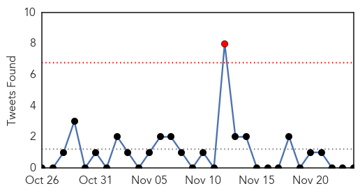
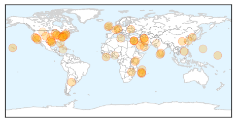
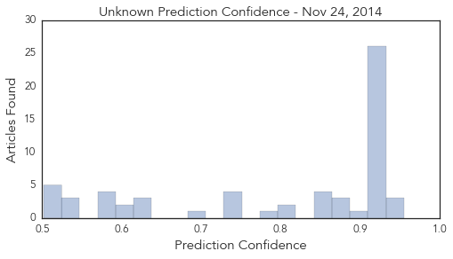

Unknown
30-Day Web Trend
1 alerts, 0 warnings

30-Day Twitter Trend
1 alerts, 0 warnings

Article Locations

Article Confidences
Top Articles:
- 0.955
- Flu season underway in Houston
- 0.950
- outbreak of plague, rising death toll
- 0.940
- First PED Outbreak Reported in Hawaii
- 0.930
- Colorado paralysis cases draw federal investigators, national focus
- 0.920
- Infection outbreak at Royal ICU
- 0.919
- Syphilis cases more than double in Clark County
- 0.917
- Chicago Tribune
- 0.917
- Chicago Tribune
- 0.917
- Chicago Tribune
- 0.917
- Chicago Tribune
- 0.917
- Chicago Tribune
- 0.917
- Chicago Tribune
- 0.917
- Chicago Tribune
- 0.917
- Chicago Tribune
- 0.917
- Chicago Tribune
- 0.917
- Chicago Tribune
- 0.917
- Chicago Tribune
- 0.917
- Chicago Tribune
- 0.917
- Chicago Tribune
- 0.917
- Chicago Tribune
- 0.917
- Chicago Tribune
- 0.917
- Chicago Tribune
- 0.917
- Chicago Tribune
- 0.917
- Chicago Tribune
- 0.917
- Chicago Tribune
- 0.917
- Chicago Tribune
- 0.917
- Chicago Tribune
- 0.917
- Chicago Tribune
- 0.917
- Chicago Tribune
- 0.904
- Alert It’s H5 virus, say Scientists
- 0.871
- Rare Infection Outbreak Confirmed At RVH
- 0.866
- Missouri grand jury on Ferguson shooting reaches decision -prosecutors
- 0.866
- UN says to miss December 1 Ebola target due to rising Sierra Leone cases
- 0.860
- SGGP English Edition- Vietnam alerts with mouse plague
- 0.857
- State and Regional
- 0.850
- NewsDaily
- 0.848
- 9,582 Tuberculosis Cases Recorded in 2013
- 0.809
- 40 deaths from plague in Madagascar is not new situation: WHO
- 0.801
- Seeing an end to herpes via vaccine
- 0.780
- Premier Li Keqiang Urges Eradication of Snail Fever
- 0.749
- Plague kills 47 in Madagascar: official
- 0.748
- New Mouse Model Better Represents JC Virus That Infects MS Patients
- 0.741
- Germany reports second case of H5N8 flu virus in a wild bird
- 0.738
- Fears Government is concealing levels of A&E overcrowding
- 0.699
- Oral health figures put dent in Turks’ smile
- 0.633
- Ja's health standards high
- 0.619
- Masking HIV target cells prevents viral transmission in animal model
- 0.615
- Ja's health standards high
- 0.614
- NHS failures blamed for C.diff at Vale of Leven
- 0.601
- November 24, 2014 (Investigation Announcement): Multistate Outbreak of Salmonella Enteritidis Infections Linked to Bean Sprouts
Showing top 50 articles...
Top Tweets:
-
No tweets found for Nov 24, 2014